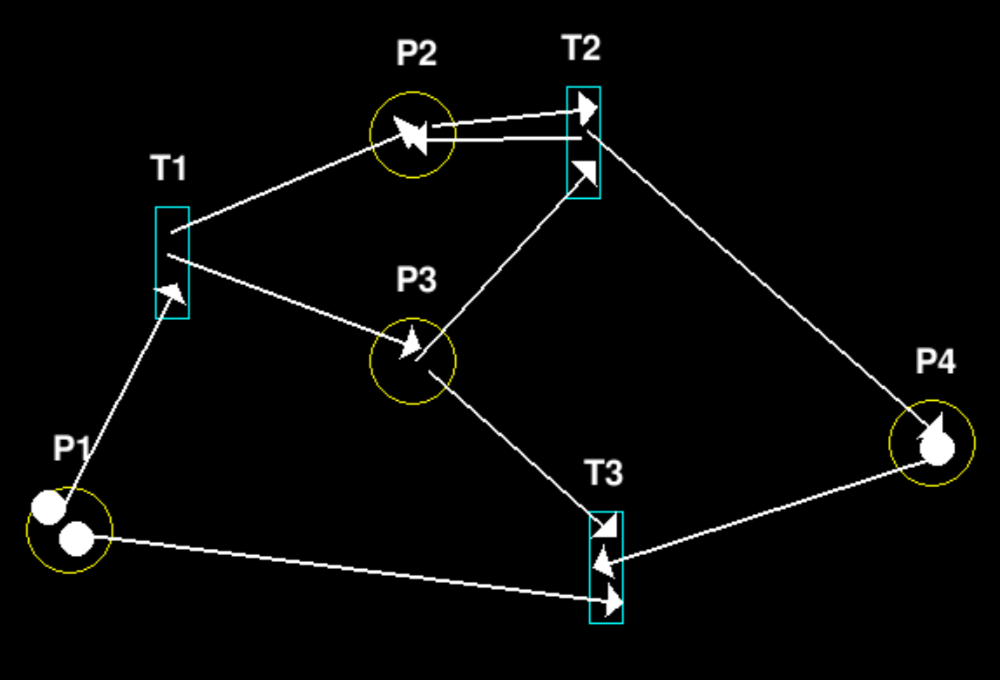
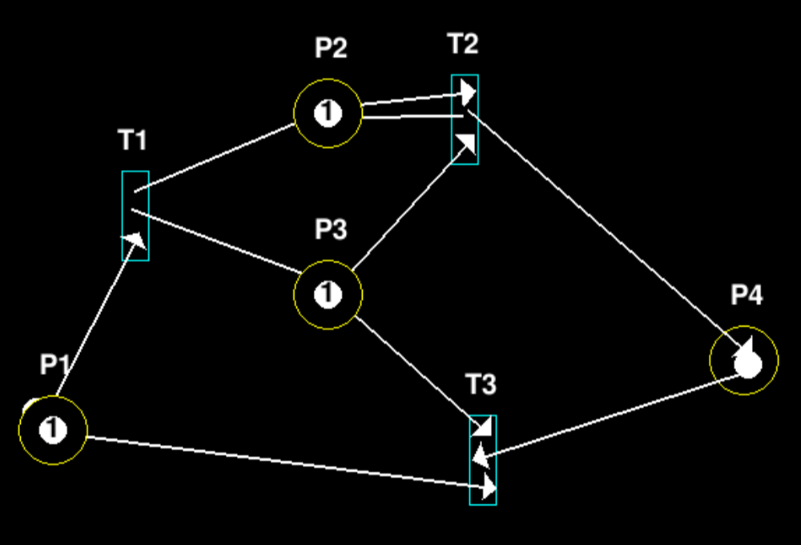
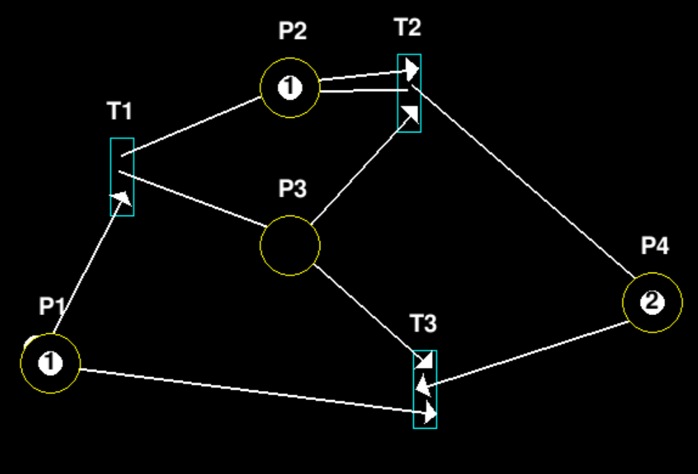
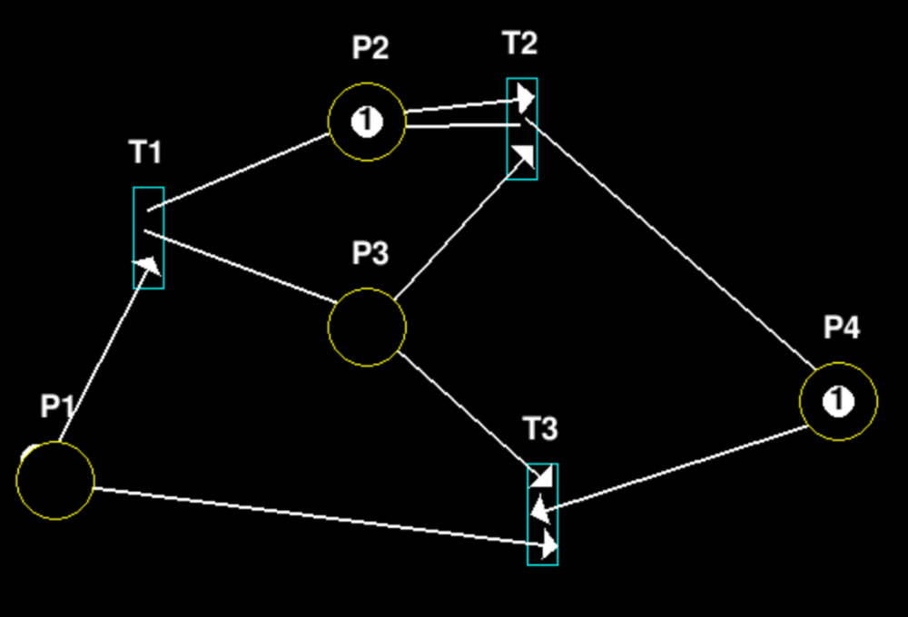

Теория
• Сеть Петри, также известная как сеть позиций/переходов (PT), является одним из нескольких языков математического моделирования для описания распределенных систем. Это класс дискретно-событийной динамической системы.
• Сеть Петри представляет собой ориентированный двудольный граф, имеющий два типа элементов: позиции и переходы, изображенные в виде кружков и прямоугольников соответственно. Позиция может содержать любое количество фишек, обозначенных маленькими кружками. Переход разрешен, если все позиции, подключенные к нему в качестве входов, содержат хотя бы одну фишку.
• Сети Петри были изобретены в августе 1939 года Карлом Адамом Петри в возрасте 13 лет с целью описания химических процессов.

Правила

Пример
Начальная сеть Петри (X0 = [2, 0, 0, 1]):
Сеть Петри после 1 итерации (X1 = [1, 1, 1, 1]):
Сеть Петри после 2 итерации (X2 = [1, 1, 0, 2]):
Сеть Петри после 3 итерации (X3 = [0, 1, 0, 1]):
